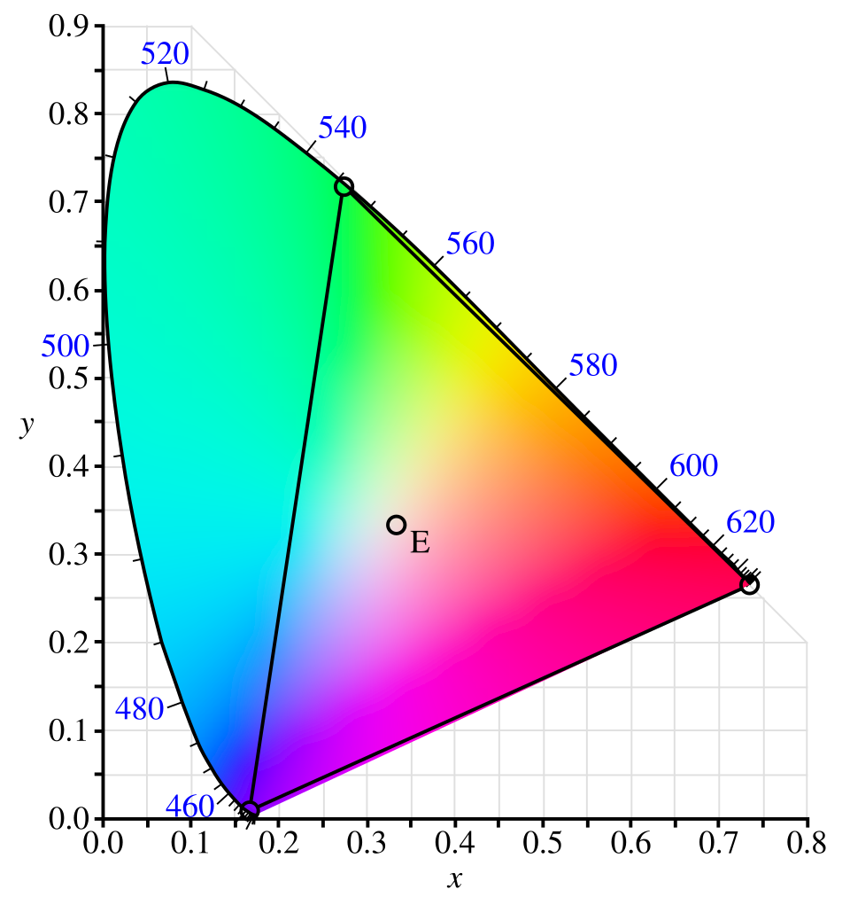

Sa razvojem televizije i filma razvili su se i razni kolor sistemi, svaki sa svojim karakteristikama. Ne postoji jedan univerzalni i "najbolji", već svaki ima svoju oblast primene. Zato je neophodno poznavati svojstva raznih kolor sistema radi odabira adekvatnog, kao i razumevanja njihovog značaja.
XYZ kolor sistem jedan od osnovnih , pod tim se misli i najznačajnijih i neizostavnih za razumevanje kolorimetrije.
Više na ovu temu u samom radu: XYZ kolor sistem